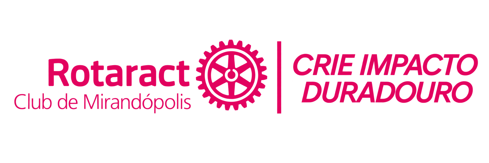
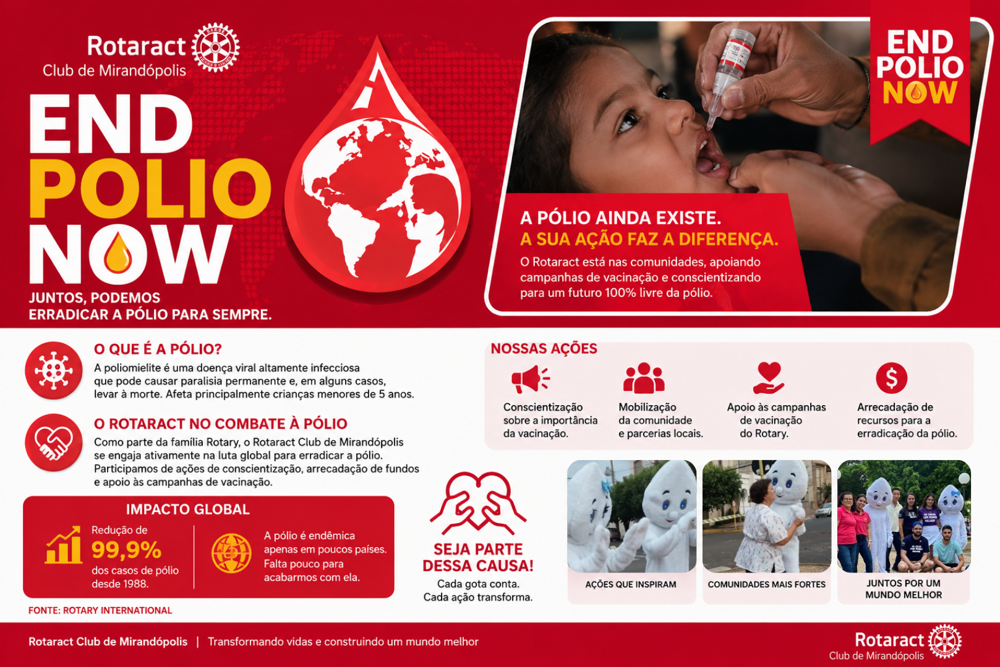
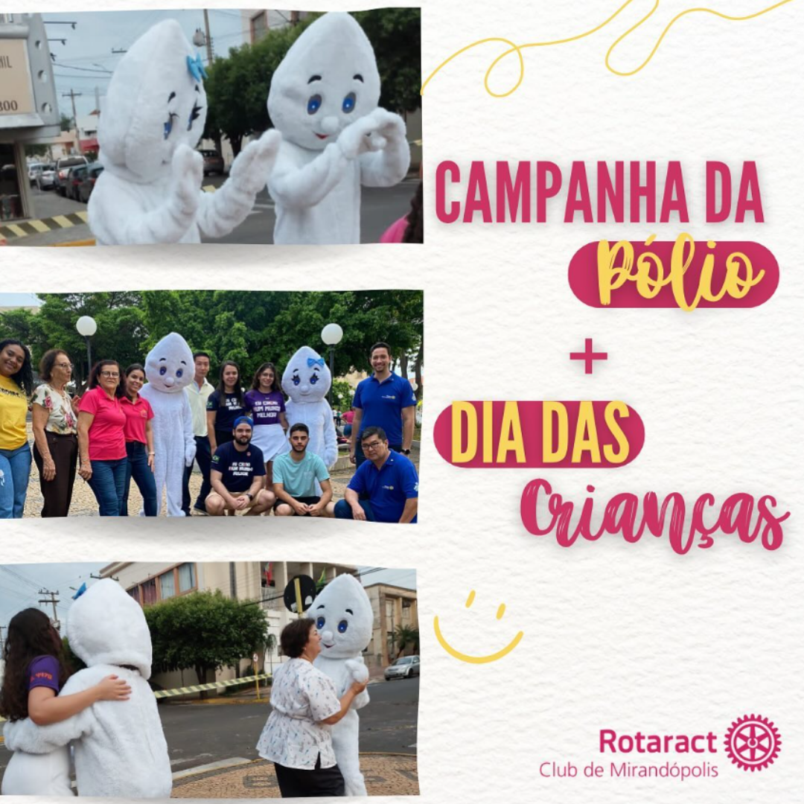
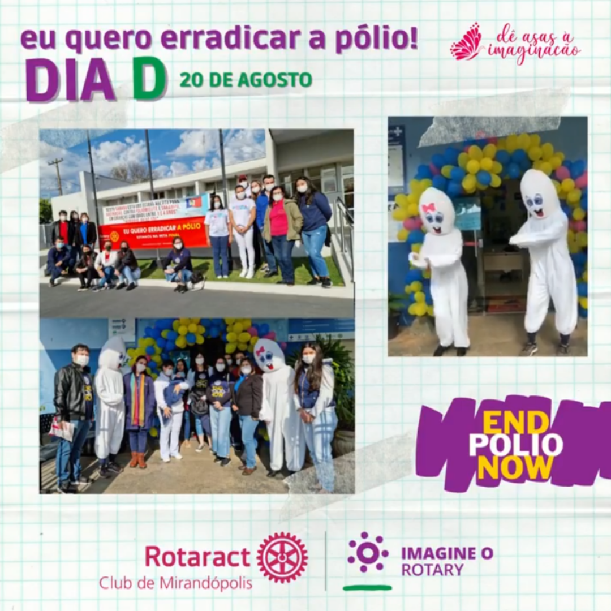
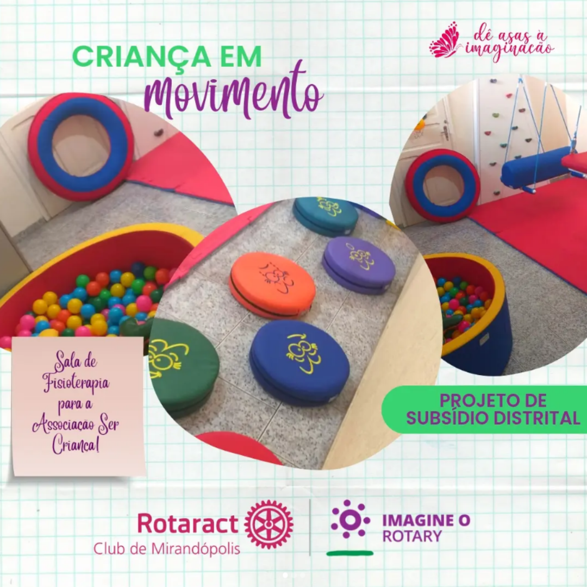
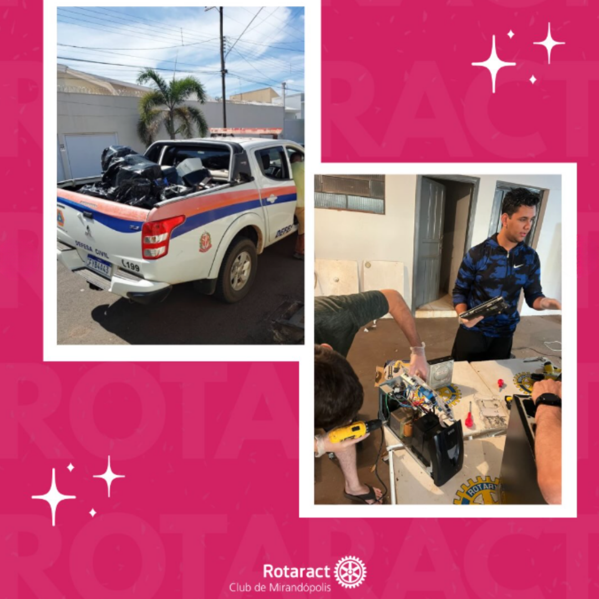
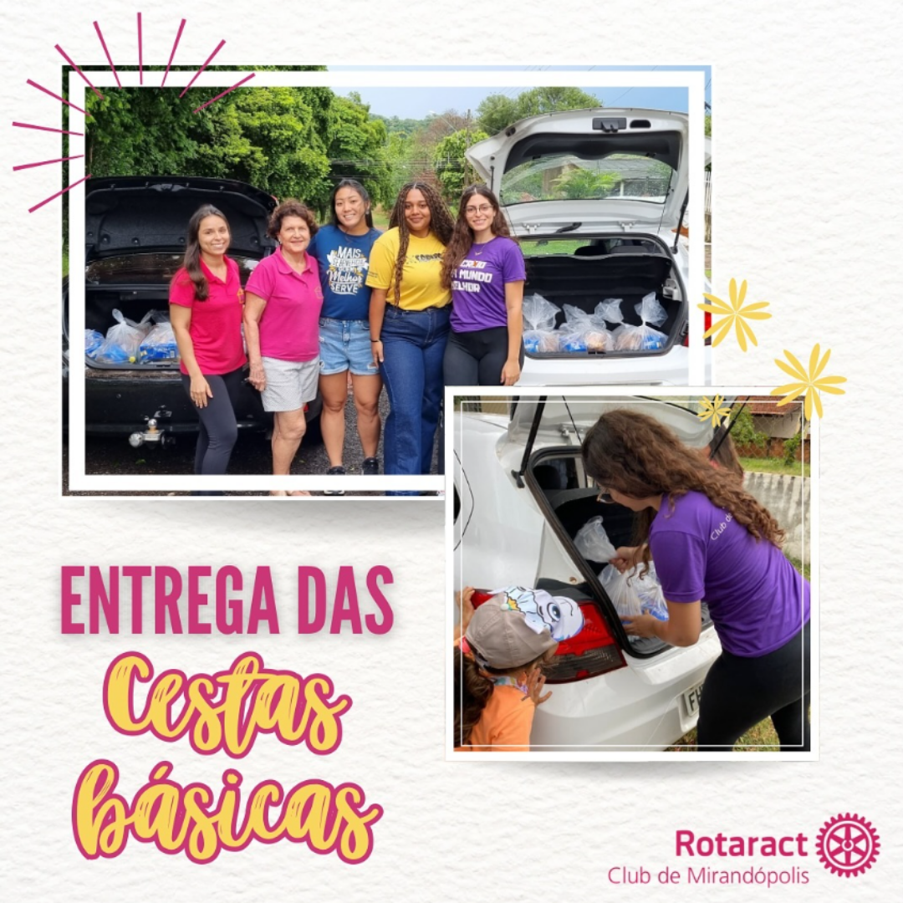
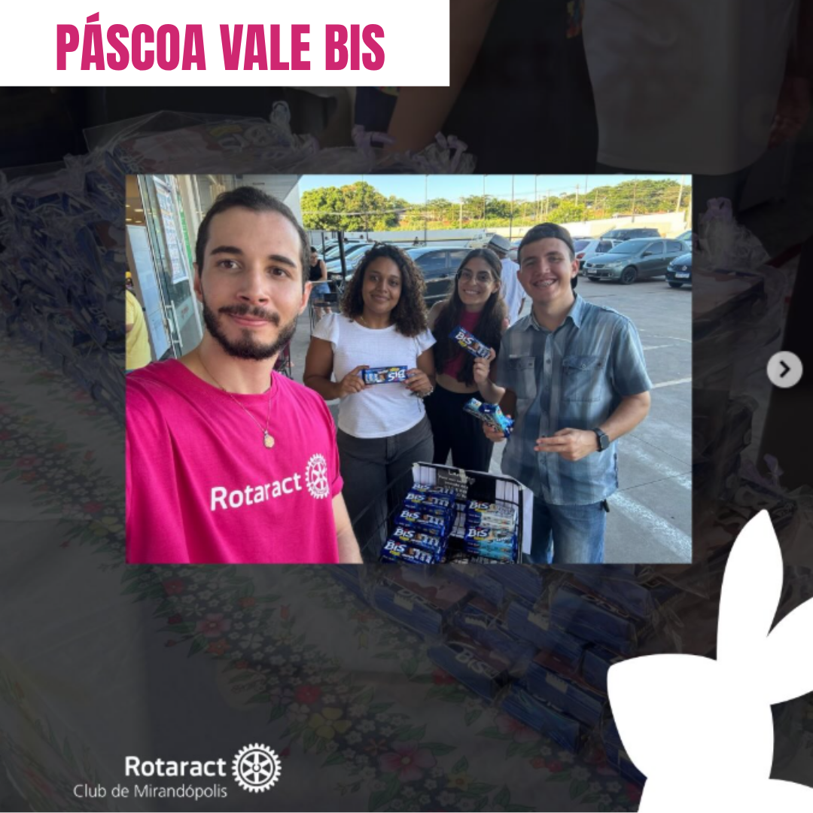

ASSOCIADO
PERFIL INDIVIDUAL · QR CODE

Somos o Rotaract Club de Mirandópolis: juventude, liderança e ação transformando boas ideias em impacto que permanece.
Quando pessoas se unem
por um propósito.
Um clube. Muitas possibilidades.
O Rotaract Club de Mirandópolis reúne jovens que acreditam que servir também é uma forma de liderar.
Desenvolvemos iniciativas, projetos e experiências que conectam pessoas, fortalecem a comunidade e criam oportunidades para aprender fazendo.
Quem faz acontecer
Conheça as pessoas que fazem parte do Rotaract Club de Mirandópolis. Explore os perfis para conhecer um pouco mais sobre a trajetória de cada associado.
Nosso portfólio nasce da colaboração: cada ação é uma oportunidade de gerar valor para pessoas e para a comunidade.
Do planejamento à execução, transformamos necessidades em ações práticas.
Unimos associados, parceiros, comunidade e outras iniciativas para ampliar o alcance.
Criamos espaço para desenvolver comunicação, gestão, criatividade e protagonismo.
Mais do que realizar uma ação, buscamos construir impacto duradouro.
Um ecossistema de iniciativas para servir, aprender, conectar e fazer acontecer.
Ações que aproximam o clube das necessidades locais.
↗Experiências para formar jovens líderes preparados para o futuro.
↗Conexões estratégicas que potencializam ideias e resultados.
↗Amizade, companheirismo e momentos que fortalecem a equipe.
↗Impacto em movimento
Conheça algumas das iniciativas e campanhas realizadas pelo Rotaract Club de Mirandópolis. Clique em um projeto para ver mais informações e registros.

Juntos, podemos construir um mundo livre da poliomielite.

Conscientização, mobilização e momentos especiais com a comunidade.

Ação de conscientização em apoio à erradicação da pólio.

Projeto voltado ao movimento, bem-estar e inclusão de crianças.

Arrecadação e conscientização sobre o descarte correto de eletrônicos.

Mobilização e entrega de alimentos para apoiar famílias.

Arrecadação e entrega de chocolates para compartilhar alegria.
Se existe uma boa ideia, existe um próximo passo.
Conecte-se com o Rotaract Club de Mirandópolis e descubra como podemos criar impacto juntos.